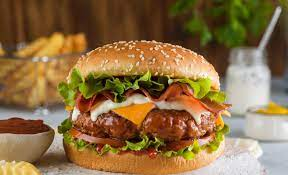

HAMBURGUESA

Para realizar una hamburguesa casera el secreto está en la cocción, si bien se cocinan doradas por fuera, deben quedar jugosas por dentro. Para darle más sabor se puede utilizar una mezcla de carne picada de vaca y de cerdo.
ingredients
- 500 g de carne picada
- 500 g de bondiola de cerdo picada
- 1 cebolla
- 2 dientes de ajo
- 1 huevo
- Sal, pimienta, orégano
- 4 panes para hamburguesa
- 8 fetas de queso Cheddar
- 1 cebolla morada
- Tomates a gusto
- Hojas verdes (opcional)
- 3/4 teaspoon fennel seed
- Mayonesa o aderezos, a gusto
- Papas fritas, para acompañar
Preparacion
- Rallar la cebolla y picar el ajo. En un bol, mezclar la carne picada, la cebolla, el ajo y el huevo hasta que estén bien integrados todos los ingredientes.
- Hacer albóndigas con la mano y darles forma de hamburguesas.
- Cocinar las hamburguesas de ambos lados en una sartén aceitada, hasta que estén bien marcadas.
- Llevarlas a horno fuerte por 5 o 10 minutos hasta que estén completamente cocidas.
- Armar las hamburguesas con los panes tibios, untar con el aderezo elegido, colocar la hamburguesa y los vegetales elegidos junto al queso cheddar.